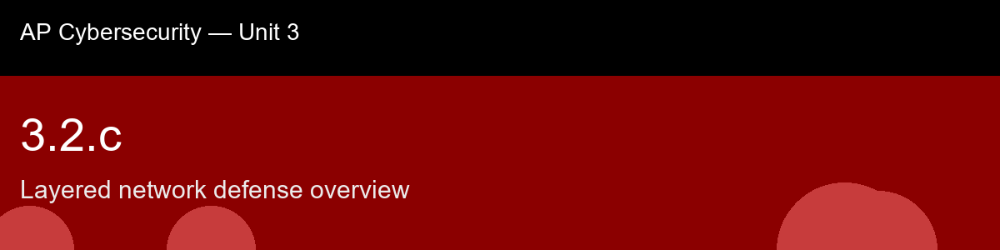

3.2.c recap, Layered network defense overview
Nice work today. Here's what to lock in:
- Recap handout:
post-lecture-handout.docx
- Simulation: SimLab
- Self-check quiz: due before next class
The big picture: The layer model here is worth memorizing by function, not just by name, because the exam wants you to place a novel control correctly, not recite the list: perimeter stops obviously bad traffic at the edge, network limits how far an attacker can move once they're past the edge, host protects the individual device assuming the network layer failed, application protects the logic running on that device, data protects the payload itself as the innermost and last line of defense, and human/managerial doesn't occupy a physical location at all, it spans and reinforces every other layer, which is exactly why 3.2.b's AUP and awareness training get filed here rather than off in their own silo. The genuinely important idea underneath all six layers is this: depth doesn't mean more security products, it means covering non-overlapping attack vectors, so that an attacker who defeats one layer's control still has to separately defeat the next layer's completely different control. Every remaining atom in this unit, VLANs, zero trust, firewalls, IDS/IPS, monitoring, incident response, is really just this skill's model getting one layer at a time filled in with concrete machinery.
Key terms to lock in:
- Defense in depth (layered defense), the principle of using multiple independent security layers so that failure of any single control does not result in full compromise.
- Perimeter layer, the boundary between an internal network and the public internet (firewall, IPS, DNS filtering).
- Network layer, internal segmentation and traffic control (VLANs, internal firewalls, Wi-Fi security).
- Host layer, controls on individual devices (endpoint antivirus/EDR, host firewalls, patching).
- Data layer, controls protecting data itself (encryption at rest/in transit, DLP).
- Single point of failure, any control whose failure alone results in a complete compromise, which defense in depth is specifically designed to avoid.
Common misconceptions -- don't fall for these:
- "The strongest single control is better than several weaker ones." → Different controls defend against different, non-overlapping attack vectors; an attacker only needs to find the one gap a single-control strategy leaves open. Depth matters more than any individual control's strength.
- "Managerial controls (policy, training) aren't really part of network defense." → The human/managerial layer spans and reinforces every technical layer, it is what keeps technical controls correctly configured and catches what automated tools miss, making it a genuine and necessary layer, not an afterthought.
Learning objective(s): 3.2.B, 3.2.C

## 3.2.c recap, Layered network defense overview
Nice work today. Here's what to lock in:
- Recap handout: `post-lecture-handout.docx`
- Simulation: SimLab
- Self-check quiz: due before next class
**The big picture:** The layer model here is worth memorizing by function, not just by name, because the exam wants you to *place* a novel control correctly, not recite the list: perimeter stops obviously bad traffic at the edge, network limits how far an attacker can move once they're past the edge, host protects the individual device assuming the network layer failed, application protects the logic running on that device, data protects the payload itself as the innermost and last line of defense, and human/managerial doesn't occupy a physical location at all, it spans and reinforces every other layer, which is exactly why 3.2.b's AUP and awareness training get filed here rather than off in their own silo. The genuinely important idea underneath all six layers is this: depth doesn't mean more security products, it means covering *non-overlapping* attack vectors, so that an attacker who defeats one layer's control still has to separately defeat the next layer's completely different control. Every remaining atom in this unit, VLANs, zero trust, firewalls, IDS/IPS, monitoring, incident response, is really just this skill's model getting one layer at a time filled in with concrete machinery.
**Key terms to lock in:**
- **Defense in depth (layered defense)**, the principle of using multiple independent security layers so that failure of any single control does not result in full compromise.
- **Perimeter layer**, the boundary between an internal network and the public internet (firewall, IPS, DNS filtering).
- **Network layer**, internal segmentation and traffic control (VLANs, internal firewalls, Wi-Fi security).
- **Host layer**, controls on individual devices (endpoint antivirus/EDR, host firewalls, patching).
- **Data layer**, controls protecting data itself (encryption at rest/in transit, DLP).
- **Single point of failure**, any control whose failure alone results in a complete compromise, which defense in depth is specifically designed to avoid.
**Common misconceptions -- don't fall for these:**
- "The strongest single control is better than several weaker ones." → Different controls defend against different, non-overlapping attack vectors; an attacker only needs to find the one gap a single-control strategy leaves open. Depth matters more than any individual control's strength.
- "Managerial controls (policy, training) aren't really part of network defense." → The human/managerial layer spans and reinforces every technical layer, it is what keeps technical controls correctly configured and catches what automated tools miss, making it a genuine and necessary layer, not an afterthought.
**Learning objective(s):** 3.2.B, 3.2.C